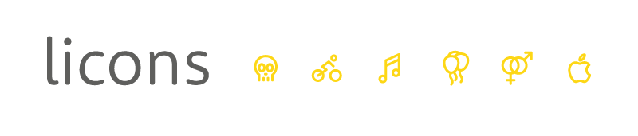

Licons is a set with 208 icons in line style created in 2014.
Created and maintained by Jan Klever.
Adding
Oh... Really? Very easy.
-
Paste the following code into the
<head>section of your site's HTML.
<link rel="stylesheet" href="https://cdn.klever.space/licons/v1.2/licons.min.css" >
Easy
Use this method to get the default licons CSS.
- Copy the entire
liconsdirectory into your project. -
In the
<head>of your html, reference the location to your font-awesome.min.css.
<link rel=stylesheet" href="licons.min.css" >
Using
Basic icons
bike
<i class="li-bike"></i>Or with ligature...
<i class="li-">bike</i>Larger icons
bike bike bike bike
<i class="li-2x li-">bike</i>
<i class="li-3x li-">bike</i>
<i class="li-4x li-">bike</i>
<i class="li-5x li-">bike</i>IcoMoon
- This version of the webfont was generated by IcoMoon.
Portfolio project
License
- Font License: SIL OFL 1.1
- Brand icons: All brand icons are trademarks of their respective owners.
- Attribution is no longer required as of licons, but much appreciated:
licons by Jan Klever - http://janklever.com.br
Author
- Email: janklever+licons@gmail.com
- Instagram: http://instagram.com/janklever
- Behance: https://be.net/janklever